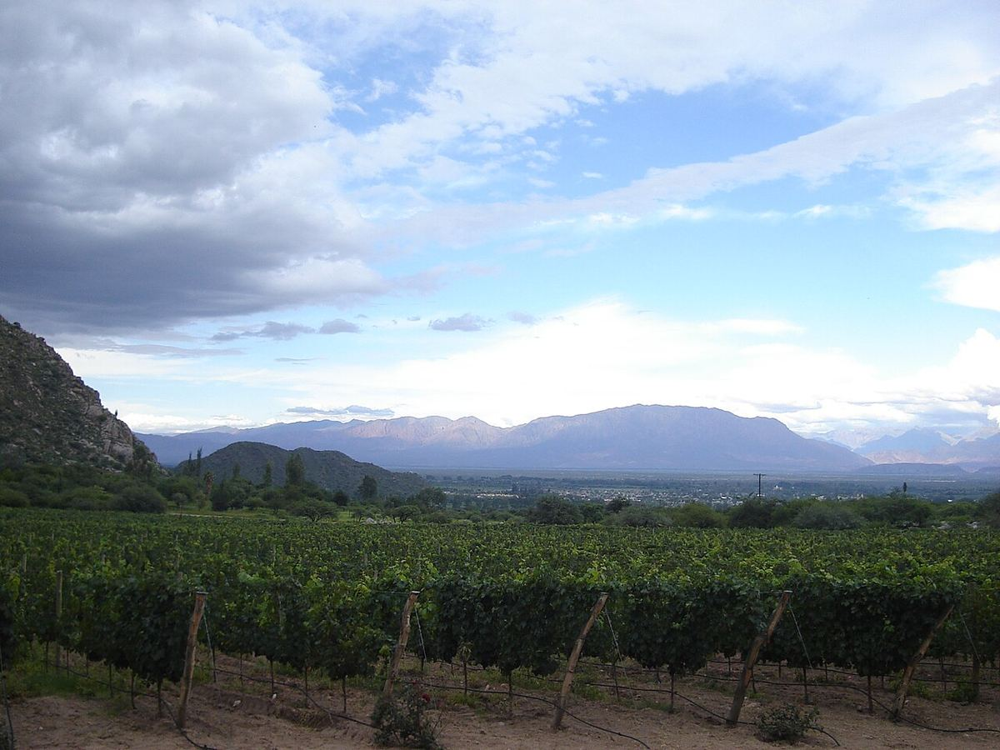

Argentina
Argentina is the largest wine producer in South America and has given Malbec its best-known expression worldwide. Its vineyards stretch along the foot of the Andes, from the high valleys of the north to Patagonia.

History
The vine reached present-day Argentina in the mid-sixteenth century with Spanish conquerors and missionaries, who brought it from Chile and Peru to have wine for Mass. After the founding of cities such as Mendoza and San Juan, in the Cuyo region, vine growing took root in the irrigated oases at the foot of the Andes. During the colonial period varieties such as the País grape, known here as Criolla Chica, and other criolla grapes born of spontaneous crossings predominated.
The nineteenth century was a turning point. In 1853 the French agronomist Michel Aimé Pouget, hired at the initiative of Domingo Faustino Sarmiento, introduced French varieties to Mendoza, Malbec among them. The arrival of the railway in Mendoza in 1885 connected the region with Buenos Aires, and mass Italian and Spanish immigration brought labour and winegrowing know-how. For much of the twentieth century the industry was geared to a huge domestic market, with table wines made in large volumes. Falling consumption and the economic crises of the late century forced a deep restructuring: from the 1990s low-quality vineyards were uprooted, foreign investment arrived, wineries were modernised and higher, cooler areas were explored. Malbec became the country’s flagship on international markets.
Climate and geography
Almost all the vineyards lie in an arid strip east of the mountain range, roughly between 22° and 42° south. The Andes block the rains coming from the Pacific, so the climate is continental and desert-like, with little rainfall, abundant sunshine and wide temperature differences between day and night. Irrigation with Andean snowmelt is essential, and was traditionally carried out through furrows and channels. Altitude compensates for the low latitude: vineyards range from about 500 to more than 3,000 metres above sea level. The main hazards are spring frosts, hail and the zonda, a hot, dry wind.
Soils
Soils are mostly young and alluvial, made up of sands, silts, gravels and boulders carried by rivers from the mountains, often poor in organic matter and well drained. In some high-altitude areas there are calcareous deposits that are now being studied closely.
Regions
Three broad areas can be distinguished. In the north, the provinces of Salta, Catamarca, Tucumán and Jujuy are home to the Calchaquí Valleys, with some of the highest vineyards in the world. The Cuyo region, with Mendoza, San Juan and La Rioja, accounts for the great majority of the vineyard area; Mendoza is by far the most important province and includes areas such as Luján de Cuyo, Maipú, the Uco Valley and San Rafael. Patagonia, with Neuquén and Río Negro, has a cooler, windier climate. In recent years vineyards have also appeared on the Atlantic coast of Buenos Aires province and in southern Chubut.
Grapes and styles
Malbec is the emblematic red: it gives deeply coloured wines with black fruit and violets and generally soft tannins, ranging from young styles to tauter, age-worthy high-altitude reds. It is followed by Bonarda, which in Argentina is the variety known in France as Douce Noir, Cabernet Sauvignon, Syrah, Cabernet Franc and Pinot Noir, the latter mainly in Patagonia and the Uco Valley. The most characteristic white is Torrontés, especially Torrontés Riojano, a very aromatic grape whose finest expression is associated with Cafayate and the Calchaquí Valleys. Chardonnay and Sauvignon Blanc are gaining ground in cool areas, and the traditional criolla grapes are being reappraised.
Regulations
The sector is regulated by the Instituto Nacional de Vitivinicultura (INV). The law provides for three levels of origin: the Indicación de Procedencia (IP), the Indicación Geográfica (IG) and the Denominación de Origen Controlada (DOC), the last of which applies to only a few areas, such as Luján de Cuyo and San Rafael. In practice most wines are identified by variety and by province or IG of origin, and in recent years many small IGs have been recognised within Mendoza to reflect the diversity of soils and altitudes.
Regions & appellations
Mendoza
Wine-producing province · Mendoza is Argentina’s leading wine province and accounts for most of the country’s vineyard area. Its irrigated oases at the foot of the Andes are the heartland of Malbec.
Valle de Uco
Wine region · The Uco Valley, in west-central Mendoza, brings together some of the province’s highest and coolest vineyards. Since the 1990s it has become the benchmark area for high-altitude Malbec.
Luján de Cuyo
Controlled Designation of Origin (DOC) · Luján de Cuyo, south of the city of Mendoza, is one of the historic areas of Argentine Malbec and one of the country’s few Controlled Designations of Origin. It retains many old vineyards and numerous emblematic wineries.
Salta
Wine-producing province · The province of Salta, in north-west Argentina, is home in the Calchaquí Valleys to some of the highest vineyards in the world. Cafayate is the cradle of Torrontés and also produces intense reds from Malbec and Cabernet Sauvignon.
Patagonia
Wine region · Argentine Patagonia, centred on the provinces of Neuquén and Río Negro, is the country’s southernmost wine region. Its cool, windy climate gives fresher-styled reds from Pinot Noir and Malbec and whites with good acidity.
San Juan
Wine-producing province · A province in western Argentina, north of Mendoza, and the country’s second-largest wine producer. Hot and very dry, it is known for its Syrah and for a viticulture ranging from the high volumes of the Tulum Valley to the high-altitude vineyards of Calingasta and Pedernal.